Life-course processes
as cause and effect
of trends in gun violence
| Charles C. Lanfear | University of Cambridge |
| Robert J. Sampson | Harvard University |
But first, Spain!

Gun Violence
Homicide in the US
Spiked recently and increasingly involves guns
Homicide in Chicago
Exaggerated in cities like Chicago, Philadelphia, Dallas
The agenda
How have these trends in gun violence impacted direct exposure to gun violence?
What are the effects of these trends on health and behavior?
What is causing them in the first place?
The
Project on Human Development in Chicago Neighborhoods
- 6200 children from 7 age cohorts, born 1978 to 1996
- 3 interviews from 1995–2003
- Representative of Chicago and its neighborhoods
Project on Human Development in Chicago Neighborhoods
- 6200 children from 7 age cohorts, born 1978 to 1996
- 3 interviews from 1995–2003
- Representative of Chicago and its neighborhoods
PHDCN+
- 60% subsample of 4 cohorts
- 1057 interviewed in 2012
- 682 followed-up in 2021
- Followed throughout the US
Funded by:
Timeline
Exposure to Gun Violence
- To what extent were individuals growing up in Chicago in the 1990s and early 2000s exposed to gun violence?
- And how did this exposure differ by race, sex and birth cohort?
Age at first getting shot
- Concentrated at transition to adulthood
- Also late 30s / post-2016 but only for Black / Hispanic
Age first seeing someone get shot
- Occurs often and at earlier age than being shot
- Similar race/ethnicity but not sex disparities
- Adolescent exposure high in early 1990s, low afterward
- Adult exposure low until 2016-2021
- Black and Hispanic males at highest risk
Question: What drove these large swings in violence and exposure?
- One key proximal cause: gun carrying
Gun Carrying
How does macro-context impact carrying across life course?
Onset of concealed carry by age
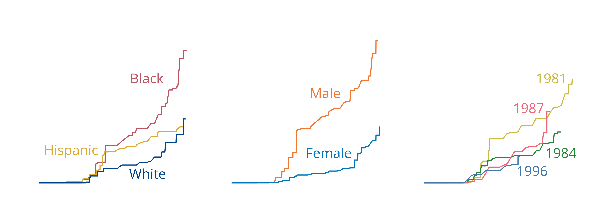- Rapidly rises in adolescence, then again in 30s
- Differences sharpest in adolescence
Onset of concealed carry by year
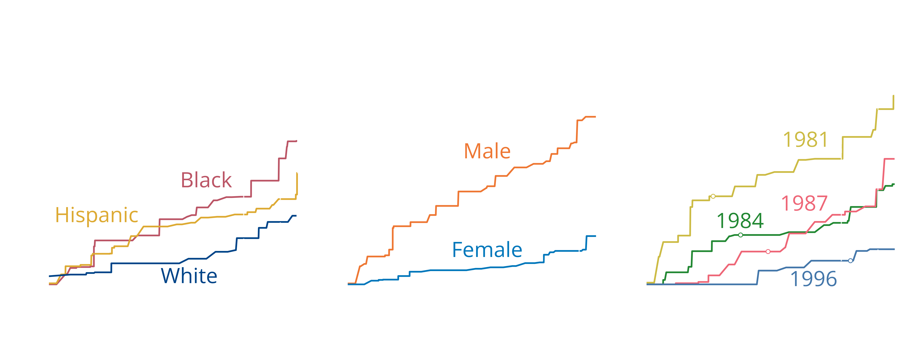- Adult increases are period effects
- Large increases in new carriers since 2016
Continuity: Who is still carrying in 2020?
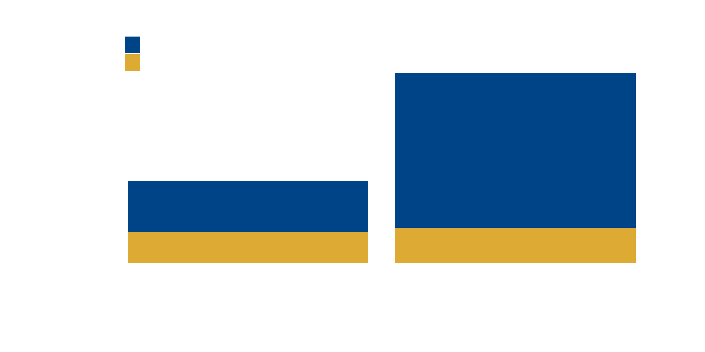- 60% of young carriers not carrying today
- Young carriers no more likely to carry without permits
Exposure to gun violence and carrying
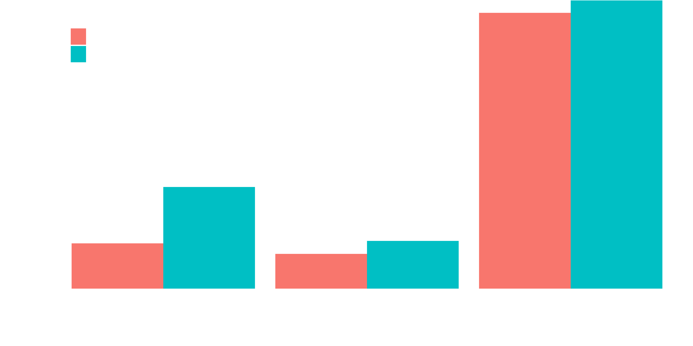- Exposed adolescents twice as likely to carry
- Adult carry similar between those exposed and not
Age of first gun use by carry onset
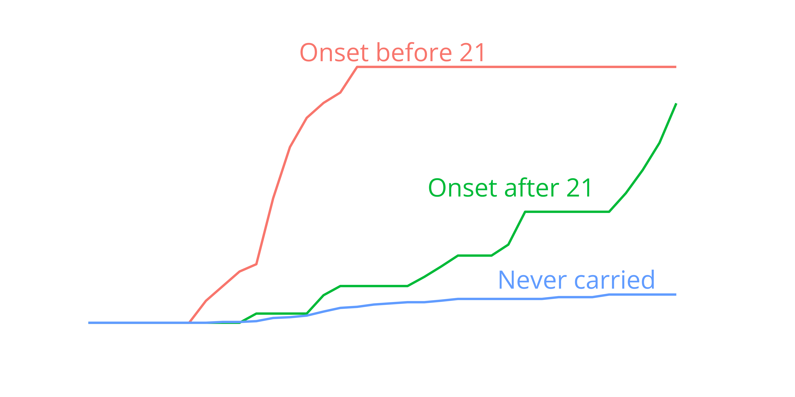- 42% of young carriers used gun by 21
- Those who didn’t never used a gun later in life
- Lifetime gun use nearly equal by age 40
Two pathways of gun carrying
Adolescent-onset
- \(\frac{1}{3}\) of those ever carrying
- Most age out
- Associated with immediate dangerous contexts
Adult-onset
- \(\frac{2}{3}\) of those ever carrying
- Most still carrying today
- Associated with insecurity and diffuse threats
What drives each pathway?
Let’s focus one key factor
Legal Cynicism and Cun Carrying
a cultural frame in which people perceive the law as illegitimate, unresponsive, and ill equipped to ensure public safety.
when calling the police is not a viable option to remedy one’s problems—individuals may instead resolve their grievances by their own means
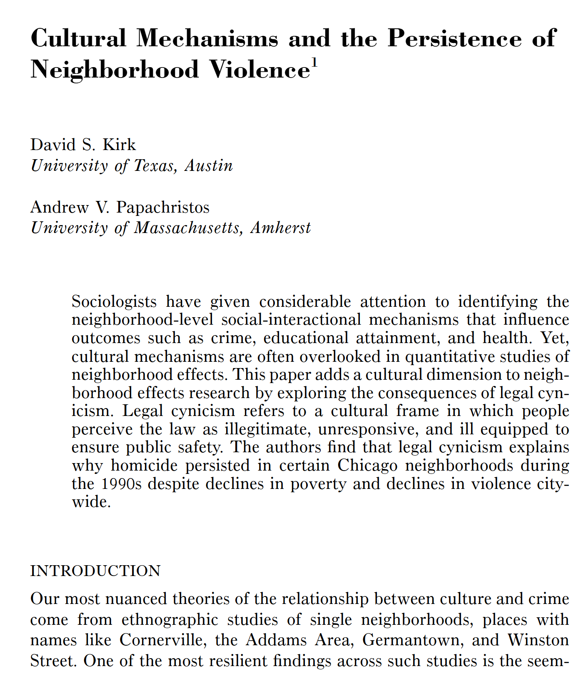
The inclination to violence springs from the circumstances of life… The code of the street is actually a cultural adaptation to a profound lack of faith in the police and the judicial system
Guns also:
- Confer status
- Deter threats
- Facilitate dominance
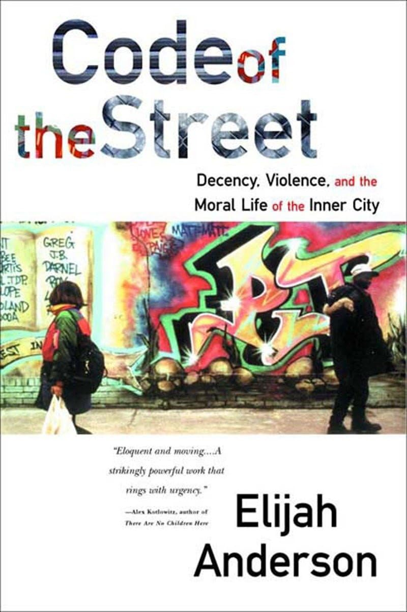
Concentrated disadvantage → alienation from institutions
… two racially differentiated beliefs promote legal gun carrying: The belief common among most carriers that police are inadequate protectors—and thus one may carry a gun as protection from crime—and the belief more common among non-white carriers that police are coercive violators of rights—and thus one may carry a gun as protection from and resistance to the oppressive state (Lanfear et al. 2024)
Linked to diffuse social and economic insecurities
Legal cynicism, guns, and emergence
Legal cynicism and gun carry affect the outcome of conflict situations in complex ways
How does life-course variation in carrying impact rates of violence?
Changing age distribution of homicide
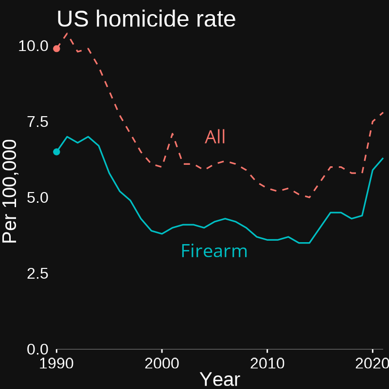
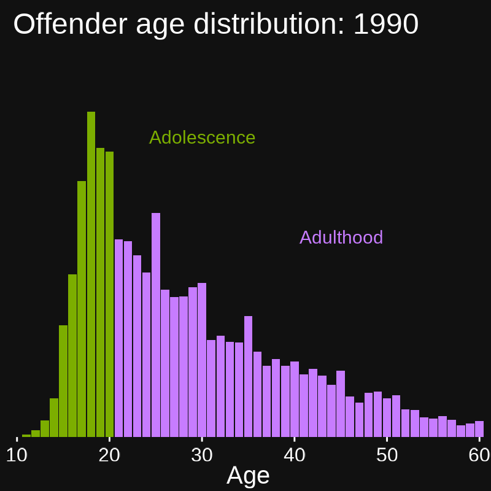
Gun homicide is increasingly committed by adults
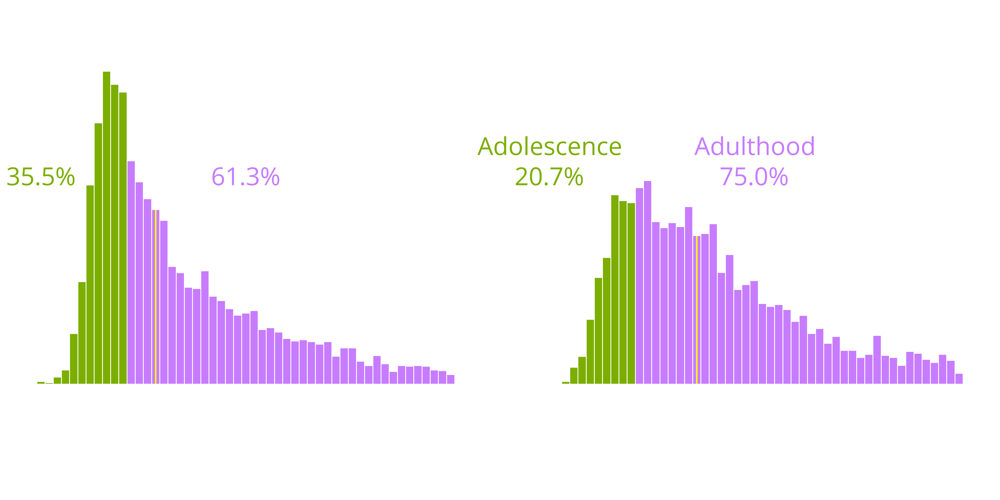Not attributable to age composition
Also: Homicide nadir in 2000 but age-shift occurred in 2010
Two similar periods of high gun violence, except…
Early 1990s
- Concentrated in adolescence
- Slow accumulation:
- Deindustrialization, segregation, lead, etc.
- Context: Concentrated disadvantage, gangs, and illicit markets
2016-2021
- Concentrated in adulthood
- Rapid destabilization:
- Trump, Ferguson, COVID-19, Floyd, etc.
- Context: Widespread insecurity, loss of faith in institutions
Both: Stark sex and race heterogeneity
Age-graded model of gun carrying and gun violence
Argument: 2021 was not a reprise of 1999, rather both were the result of differential activation of processes responding to macrosocial context
Some expectations
1995
- Spatially concentrated
- Strong disadvantage link
- Local cynicism
- Similar offender/victim
- Acquaintances
- Group-oriented
- Criminal contexts
- Fewer legal guns
- Gun policy less relevant
2021
- More dispersed
- Weaker disadvantage link
- General cynicism
- Less similar offender/victim
- Strangers
- Individual-oriented
- Non-criminal contexts
- More legal guns
- Gun policy more relevant
Early evidence
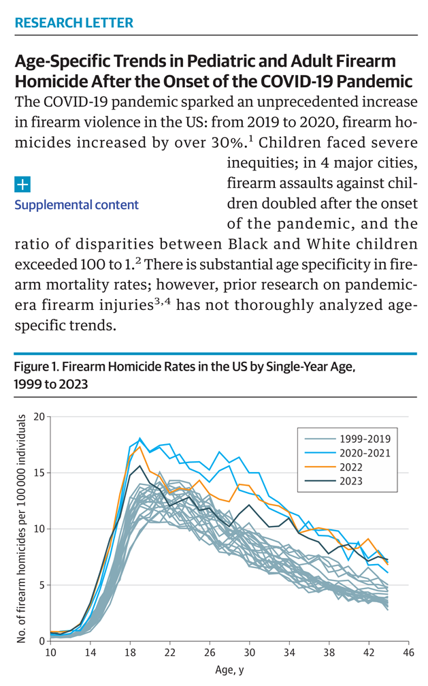
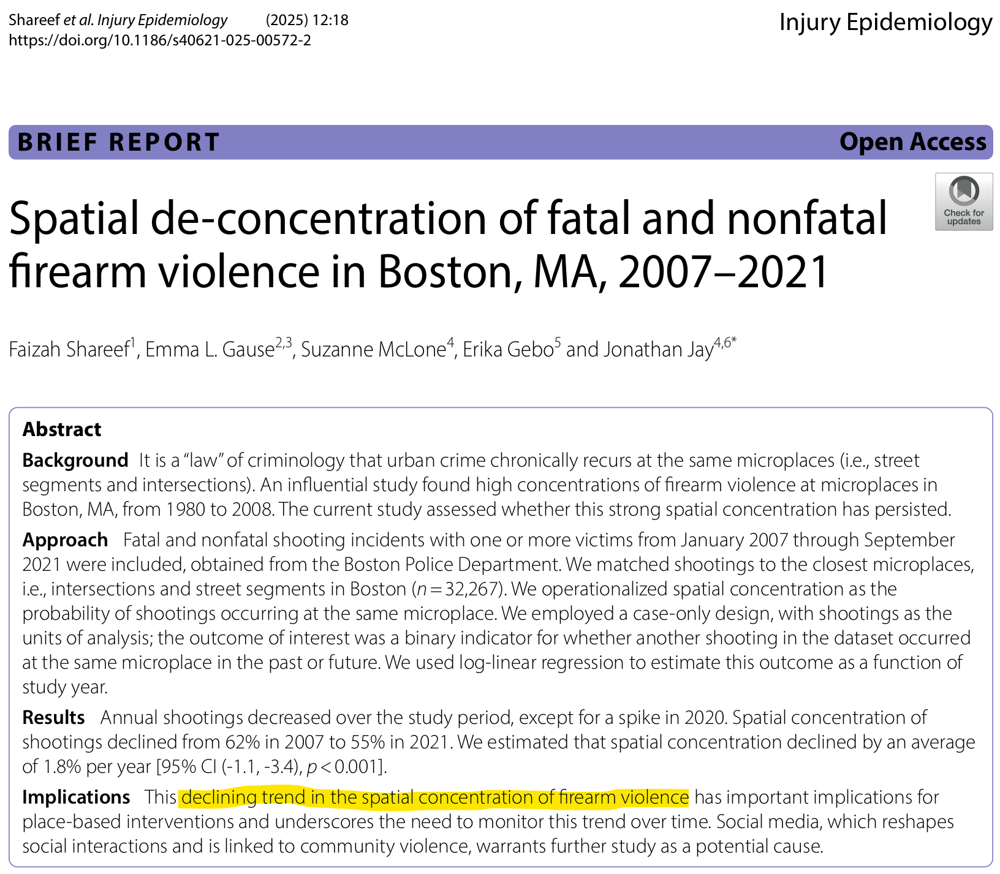
The future
Expanding cynicism
- From local to national focus
- Alienation without disadvantage
National politics
- Violation of letter and spirit of law
- Declining legitimacy of institutions
The life course
- When are formative years for legal cynicism?
- What are long-term macrosocial consequences?
New questions
How do we test empirically?
- Alternate explanations?
- Integrating life course with neighborhood effects
Is it changes in context or changes in meaning of contexts?
- Gendered and racialized impacts and reactions
How does this relate to broader macrosocial change?
- Gun culture
- Social media
- Polarization
- Unstructured socialization
Feedback and questions
Contact:
Charles C. Lanfear
Institute of Criminology
University of Cambridge
cl948@cam.ac.uk
For more about the PHDCN+:
PHDCN@fas.harvard.edu
https://sites.harvard.edu/phdcn/
https://doi.org/10.1007/s40865-022-00203-0
Social change and the life course
Classic concerns of demography… mostly